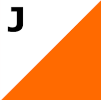

Beginner Course
Safety Reminders
- Be aware of your surroundings.
- Be courteous with the disc golfers.
- Watch your head and step while walking with a map and compass.
- Drinking fountains and restrooms are located near the starting sign.
This course will give you approximately 1/2 a mile of walking exercise.
Course checkpoints are found on existing disc golf traps. Look on the base pole for the orange orienteering flag. If there are two flags next to each other, write both letters. Sample Flag:

Hint: See the Getting Started page for help on compass courses.
Hint: You might visit the same flag more than once on a course.
Hint: If you just see a basket and run to it, you might miss it. Check your paces and directions. Some baskets are near each other!
Time to Begin!
You may type your flag letter in the boxes below and use the "check" button any time. It will not reveal flags that you havn't entered yet.
Start at the Compass Course Sign
| Direction | Dist. | Flag | |
|---|---|---|---|
| (#1) 73° | 77 ft. | ||
| (#2) 30° | 211 ft. | ||
| (#3) 260° | 375 ft. | ||
| (#4) 14° | 192 ft. | ||
| (#5) 353° | 238 ft. | ||
| (#6) 103° | 270 ft. | ||
| (#7) 178° | 225 ft. | ||
| (#8) 142° | 379 ft. | ||
| (#9) 333° | 650 ft. |
The Intermediate Course starts out on this course and then continues to more flags. If you want to keep going, go to the Intermediate Course and skip to step 10.